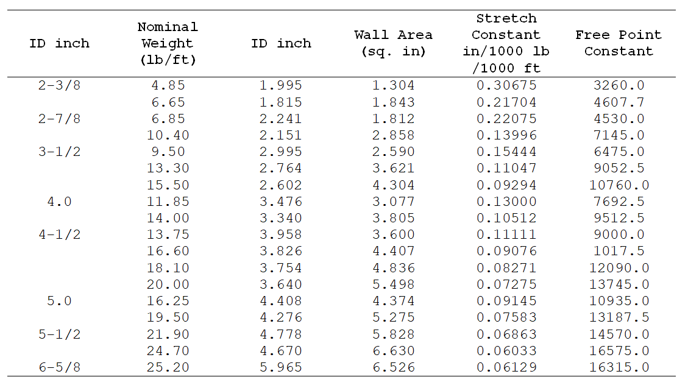

Determine the feet of free pipe and the free point constant
Method 1
The depth at which the pipe is stuck and the number of feet of free pipe can be estimated
by the drill pipe stretch table below and the following formula.
Drill Pipe Stretch Table

Case :
Drill pipe =
inch -
lb/ft
stretch =
inch
pull force =
lb
From drill pipe stretch table :
Free point constant =
Determine free point constant (FPC)
The free point constant can be determined for any type of steel drill pipe
the outside diameter (inch) and inside diameter (inch) are known :
Where ;
AS = pipe wall cross sectional area (sq in.)